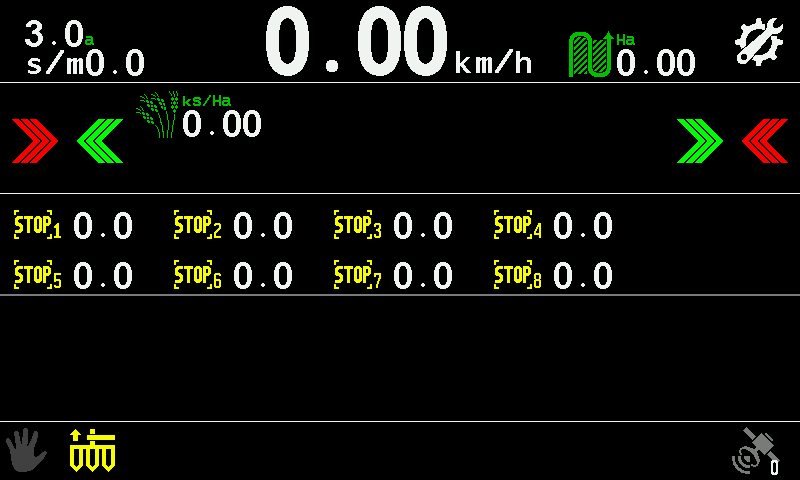

Der zweite Startbildschirm
Der zweite Startbildschirm — was auf ihm steht, wie Sie ihn öffnen und schließen und was seine Pfeile, Kacheln und Symbole bei Berührung tun.
Der zweite Startbildschirm zeigt die Arbeit in großen Zahlen und die Dosierermotoren als Reihe von Kacheln. Er passt zu einer Maschine, deren Aussaatmenge von elektrischen Dosierermotoren gehalten wird und bei der das Panel die Motoren und die wichtigsten Arbeitsaggregate überwacht statt ein Sektionsdiagramm.
Öffnen Sie ihn vom Startbildschirm mit einem langen Wischen nach rechts. Schließen Sie ihn mit einem langen Wischen nach links — er kehrt zum Startbildschirm zurück. Er gehört nicht zum Kreis der Arbeitsbildschirme, und das Panel öffnet ihn nie von selbst.

- Aussaatmenge. In Körnern je Meter.
- Fahrgeschwindigkeit. In km/h; gelb, solange sie simuliert wird. Berühren und halten Sie sie für das Kontextmenü des Geschwindigkeitssensors. Geschwindigkeit
- Einstellungssymbol. Ein Tippen öffnet das Hauptmenü.
- GPS-Symbol. Ein Tippen öffnet den GPS-Bildschirm. GPS
- Rote Pfeile. Ein Tippen nimmt den äußersten Motor auf dieser Seite aus der Überwachung.
- Grüne Pfeile. Ein Tippen nimmt den nächsten Motor zu dieser Seite hin wieder in die Überwachung.
- Sollmenge. Angezeigt im Modus „Precise“ (Einzelkorn). Berühren und halten Sie sie, bis sie aufleuchtet, und wischen Sie dann nach oben oder unten, um sie zu ändern.
- Motorkacheln. Nummer und Wert jedes Motors; das Symbol wechselt mit dem Zustandszeichen — STOP oder einem roten × mit XXX. Berühren und halten Sie eine Kachel für ihr Kontextmenü.
- Stoppsymbol. Berühren und halten Sie es, um die Produktausbringung zu sperren oder freizugeben. Ein kurzer Piepton bestätigt.
Bei einer Maschine mit Gebläse, Drucksensor oder Pumpe steht links in der obersten Zeile der Aggregatwert — jeweils einer. Ein Tippen zeigt den nächsten; Berühren und Halten öffnet sein Kontextmenü.
Jedes Motorsymbol wechselt etwa einmal je Sekunde zwischen dem Bild des Motors und dem Zeichen seines Zustands. Was die Zustände bedeuten: Motorenbildschirm.
Die Pfeile sind immer auf diesem Bildschirm. An einer Maschine ohne Dosierermotoren haben sie nichts, worauf sie wirken könnten.
Was Sie hier tun können
| Aufgabe | So geht es |
|---|---|
| Das Hauptmenü öffnen | Das Einstellungssymbol antippen |
| Die Aussaatmenge ändern | Die Menge berühren und halten, dann nach oben oder unten wischen. Sie bleibt innerhalb der zulässigen Grenzen. Ein Tippen an anderer Stelle beendet das. |
| Den Sollwert eines Produkts nach Masse einstellen | Seine kg/ha-Kachel berühren und halten; die Menge im Zahlenblock eingeben |
| Motoren aus der Überwachung nehmen oder wieder hineinnehmen | Die roten oder grünen Pfeile antippen. Mit „Yes“ (Ja) bestätigen, wenn das Panel fragt. |
| Die Einstellungen eines Motors öffnen | Die Motorkachel berühren und halten |
| Die Produktausbringung sperren oder freigeben | Das Stoppsymbol berühren und halten. Ein kurzer Piepton bestätigt. |
| Die Daten des Empfängers sehen | Das GPS-Symbol antippen |
| Zum Startbildschirm zurückkehren | Langes Wischen nach links |
Ihre Maschine tut etwas, das diese Seite nicht beantwortet? Schreiben Sie an support@agriwelt.com — es antwortet ein Ingenieur.